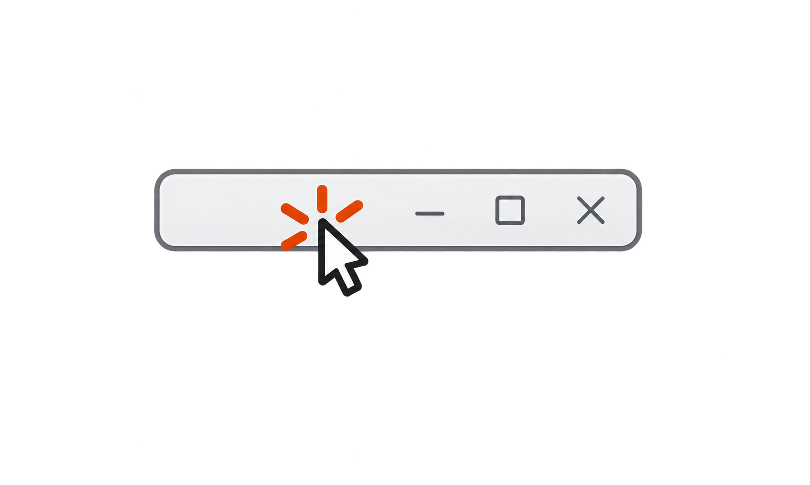
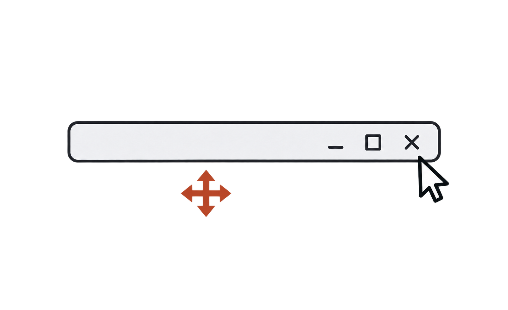
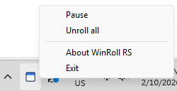

Right-click an empty caption
Right-click an empty caption area of an eligible window to roll it up. Right-click again to unroll.
Roll eligible windows up to their title bars with a right-click. Unroll them when you need them. Keep your workspace open and clear.
Keep the windows you're not using open and within reach. Unroll them when you're ready.

Right-click an empty caption area of an eligible window to roll it up. Right-click again to unroll.

Left-drag a rolled title bar to move the window. Its contents stay collapsed. A plain left click focuses it.

Keep windows rolled, unroll when needed, and exit safely.
One portable x64 executable, written in Rust. No injected DLL. Run normally, without administrator privileges.
Read the usage guideRequires Rust's Windows MSVC toolchain, Visual Studio C++ build tools and Windows SDK.
git clone https://github.com/jedipi/WinRoll-RS.git
cd WinRoll-RS
cargo build --release --locked
.\target\release\winroll.exe